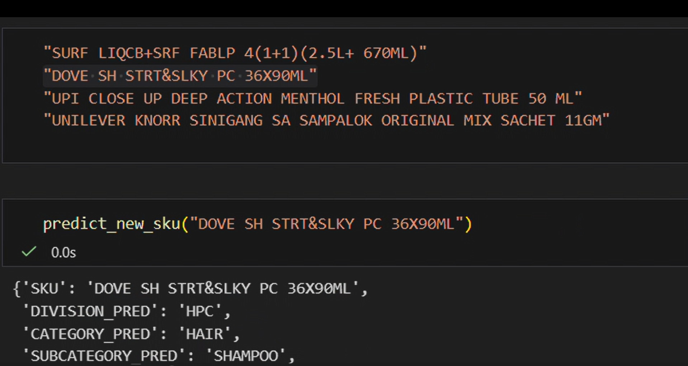
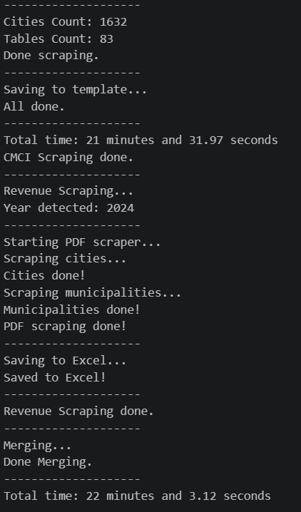
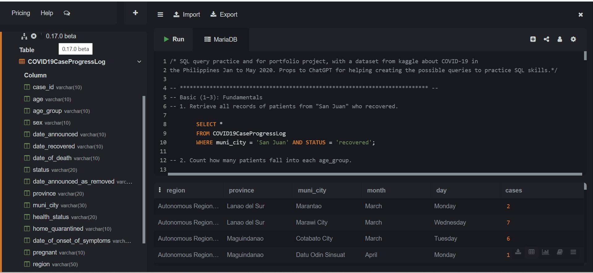
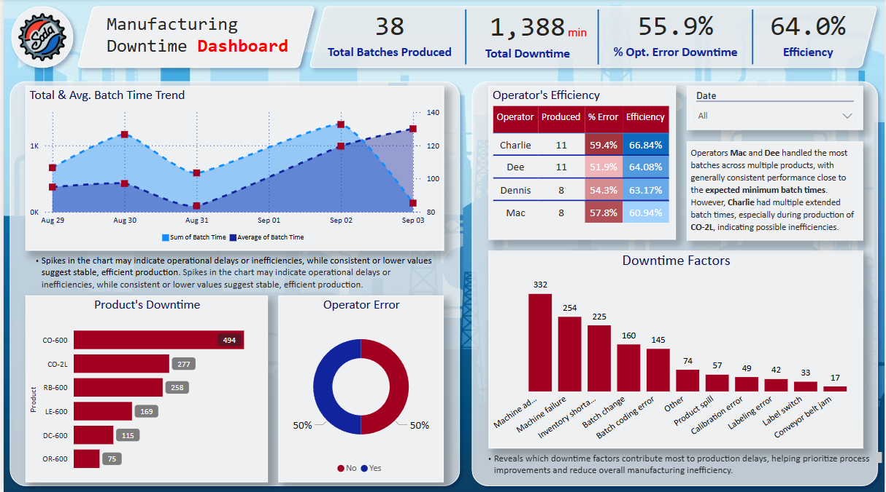
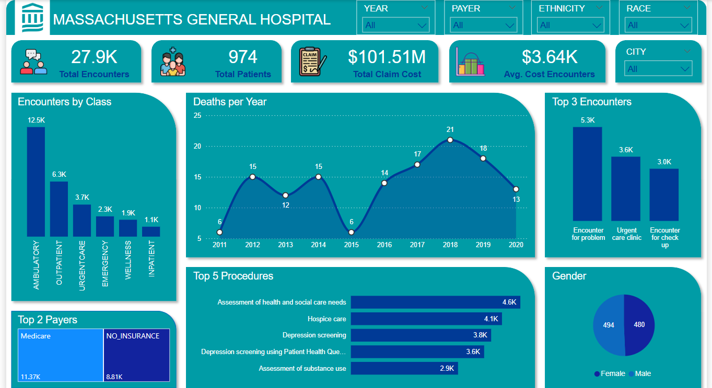
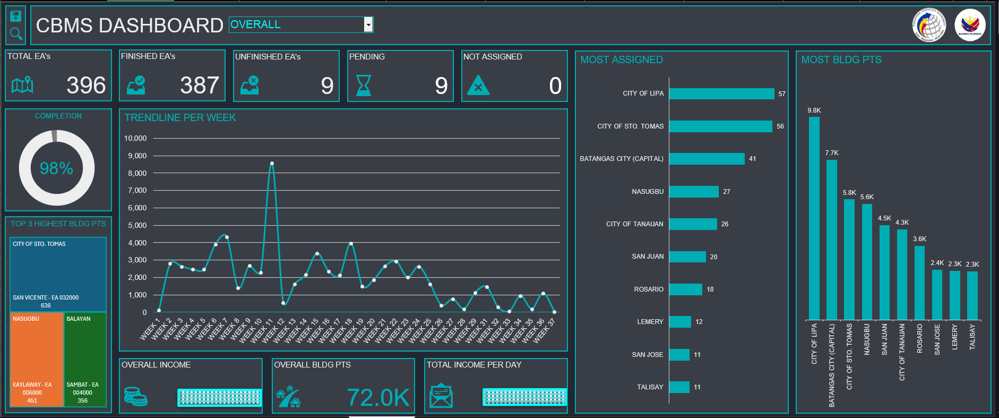

# about.py
# Hi, welcome to my portfolio!
name = "Allen James Vidal"
interests = ["Coding", "Problem Solver", "Automation", "Data Manipulation"]
tools = ["Excel", "Power BI", "SQL", "Python", "Claude", "ChatGPT"]
bio = """
Data Specialist with hands-on experience in data cleaning, tagging, and automation using Excel, SQL, Power BI, and Python. I build extraction scripts, dashboards, and ML prototypes — with a strong interest in data engineering, data science, and scalable data workflows.
"""
experience = [
{
"company": "Unilever",
"role": "Data Specialist",
"period": "08/2025",
"location": "BGC, Taguig",
"highlights": [
"Tagged and validated SKU data using Excel across CRM and POS datasets",
"Built Power BI and Excel dashboards to track operational performance",
"Automation tasks using Python (Pandas)",
"Built web scraping and PDF extraction scripts (Playwright, pdfplumber)",
"Prototyped ML model for SKU tagging using TF-IDF and Logistic Regression",
]
},
{
"company": "Philippine Statistics Authority (PSA)",
"role": "Map Data Processor",
"period": "10/2024 – 06/2025",
"location": "Batangas City, Batangas",
"highlights": [
"Processed and validated GIS-based census data using QGIS and QField",
"Performed building digitization, map updates, and EA delineation",
"Ensured accuracy of geospatial datasets for national census operations",
]
},
]
# projects.py
# here are some things I've built
import os
project_dir = "/tutorial/task/skills/projects/"
for projects in os.listdir(project_dir):
open(projects)

Prototyped a machine learning model that automatically categorizes SKUs using TF-IDF and Logistic Regression — reducing manual tagging time significantly.
🐙 View on GitHub
Built a Python pipeline to scrape web content, extract data from PDFs, and Excel, converting unstructured information into clean structured datasets.
🐙 View on GitHub
Practiced writing SQL queries starting from basics like counting cases by location, then moved to intermediate queries using subqueries and CTEs for averages and filtering. We tackled advanced topics like calculating recovery rates and handling division safely.
🐙 View on GitHub
A 30-day Power BI dashboard competition using real-world manufacturing data, highlighting top data storytellers from across the country.
🐙 View on GitHub
DSA Data Challenge 2025 Hosted by DataSense Analytics A nationwide competition where participants transform a healthcare dataset into actionable insights using Power BI Desktop. The challenge focuses on real-world skills like data cleaning, analysis, modeling, and dashboard design.
🐙 View on GitHub
An interactive dashboard designed to track the progress of a Map Data Processor at the Philippine Statistics Authority (PSA). It features a search bar for easy navigation and quick access to information on processed areas.
🐙 View on GitHub# contact.py
# feel free to reach out!
contact = {
"email": "allenjamesvidal04@gmail.com",
"linkedin": "linkedin.com/in/allen-james-vidal-230181314/",
"github": "github.com/AJEV04",
"whatsapp": +639634856084,
}